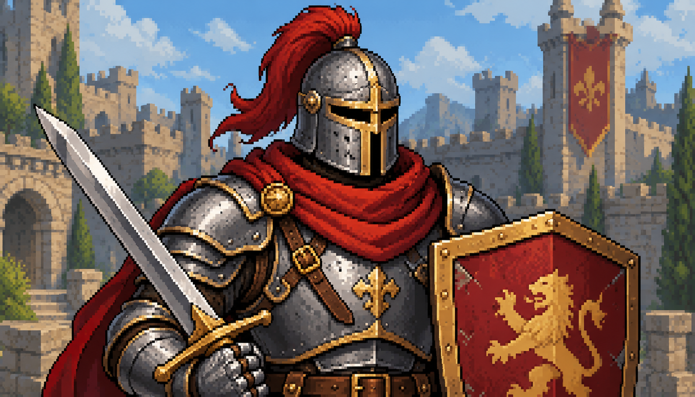
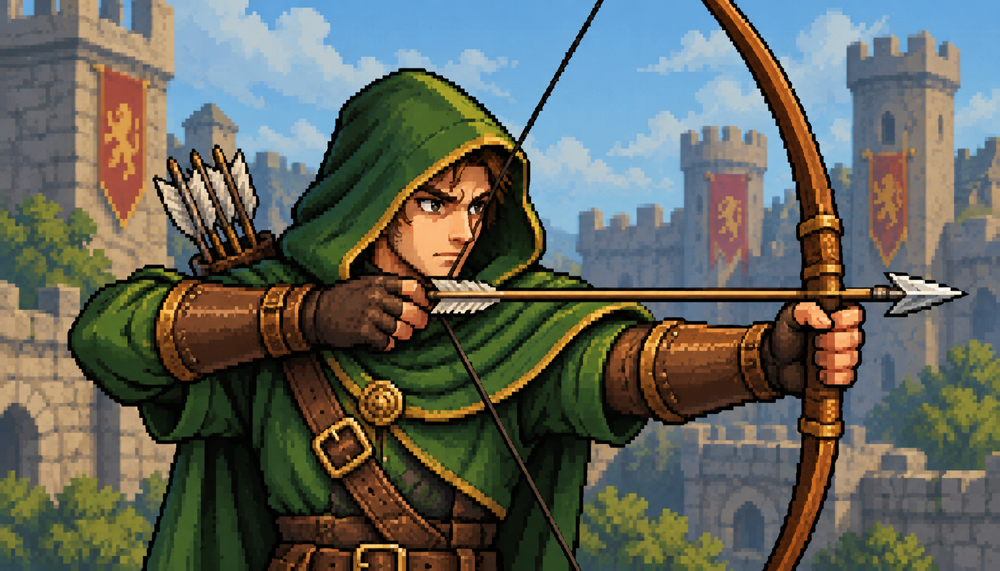
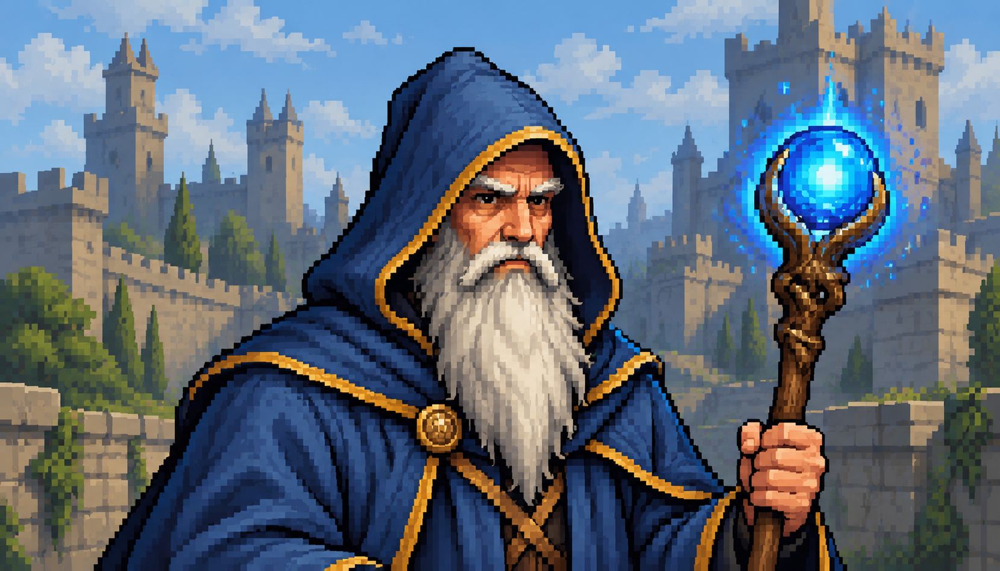

Recrutamento — revisão do cabeçalho e retratos
Bandeiras, ouro e fechamento têm áreas separadas. O subtítulo ocupa sua própria faixa,
com espaço até os cartões. Os três retratos são artes novas, com personagens centralizados
e sem molduras ou emblemas de interface incorporados.
Menu atualizado — 1920 × 1080

Resolução compacta — 1366 × 768

Novas artes

Guerreiro

Arqueiro

Mago
Estoque esgotado

Ouro insuficiente

Compra concluída

As novas capturas são candidatas à revisão. A baseline anterior permanece preservada.